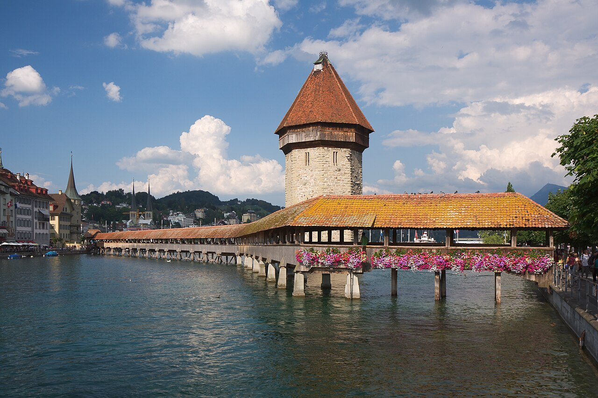
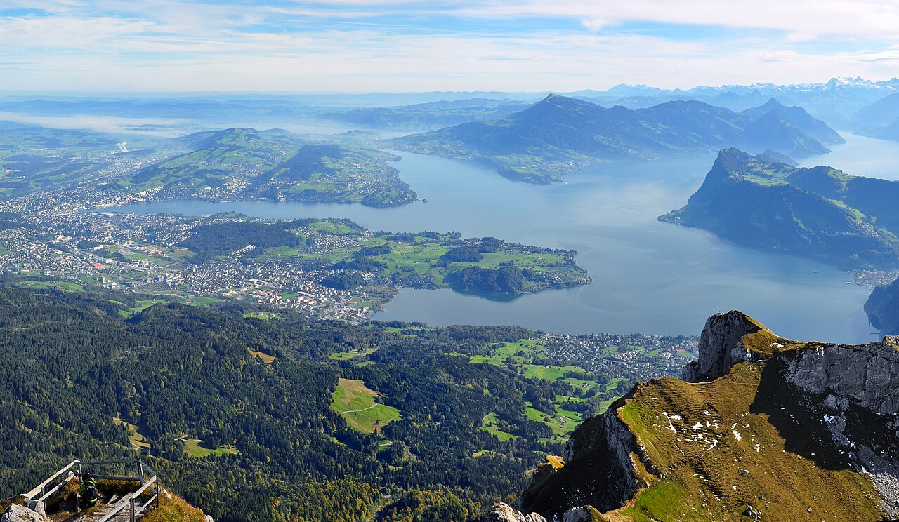
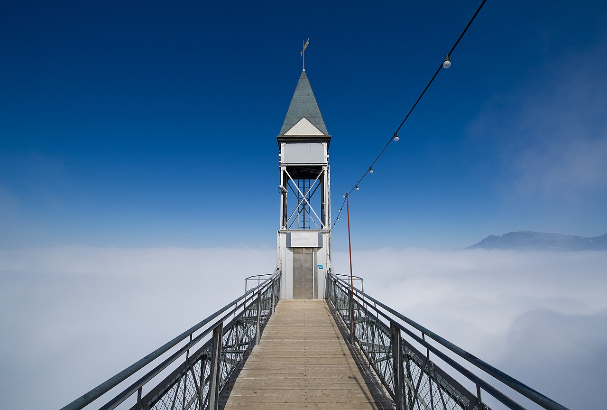
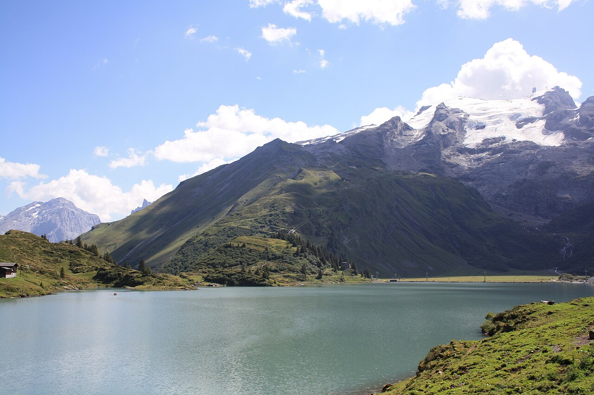
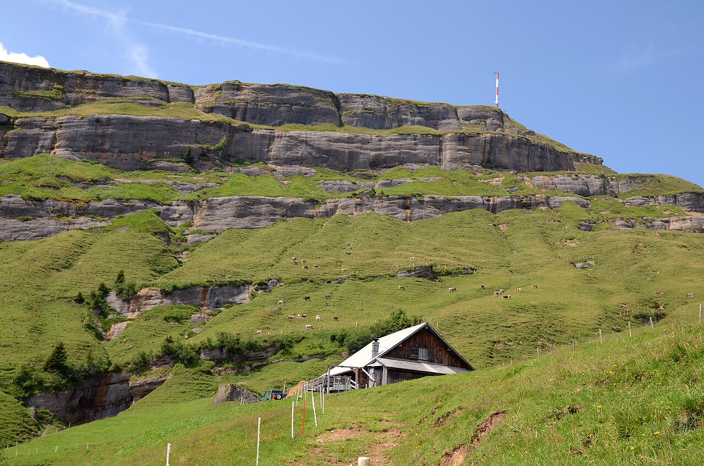

May
GoodPilatus from mid-May, but the Stoos ridge and high trails are still snowy.
per person≈ €1 280–2 030

A fjord-like lake ringed by famous peaks: Pilatus, Rigi, Stoos, Bürgenstock. One pass covers almost all of it, and Lucerne is only 5 hours from home.
Pilatus opened on 11 May in 2026. The Stoos ridge hike is usually snow-free from mid-June.
July–August adds ≈ €130–200 per person here (+10 %), mostly for beds. Passes, food and most lift tickets cost the same all summer.
Pilatus from mid-May, but the Stoos ridge and high trails are still snowy.
Everything open and the lake warming up. The sweet spot.
Lake swimming and every lift, but the old town and the boats are packed.
The same crowds, and the Lucerne Festival starts in mid-August.
Keep 1–2 days flexible and save the big mountain days for clear weather.
Langenfeld → Basel → Lucerne (≈ 5 h). Chapel Bridge, Lion Monument and the free Musegg wall towers.
Boat → Alpnachstad → the world's steepest cog railway → Pilatus Kulm → gondola down to Kriens.
Boat to Vitznau → cog railway to Rigi Kulm → walk to Kaltbad and the panorama trail to Rigi Scheidegg.
Steepest funicular in the world (110 %) → chairlift to Klingenstock → ridge hike to Fronalpstock (≈ 2.5 h) with views of 10 lakes.
Trübsee alpine lake and the Engstlenalp trail, or Brunni and the Härzlisee. Titlis is extra (glacier, Cliff Walk).
Boat + funicular to Bürgenstock, the cliff path to the Hammetschwand lift (Europe's highest outdoor lift). Afternoon: the CabriO open-top cable car up Stanserhorn.
Maderanertal: waterfalls, the Golzernsee lake and a historic hotel. Or Seelisberg → the Rütli meadow, birthplace of Switzerland, by boat on Lake Uri.
Morning on the lake, train home in the afternoon (≈ 5 h).





With 5 people, a holiday apartment with a kitchen is almost always cheapest. Book with free cancellation now and re-check prices later.
Family rooms for 4–6 and kitchens (Backpackers / Bellpark).
≈ CHF 45–65 pp/nightWeggis/Vitznau on the lake are calmer and boats are covered by your pass.
≈ CHF 300–450 per night for the groupSleep on the summit and watch the sunrise over a sea of fog and the Alps.
≈ CHF 150–250 ppLangenfeld → Köln → Basel → Lucerne (≈ 5 h, one change). DB Sparpreis Europa goes straight to Luzern.
Lucerne Travel Pass: 3 days CHF 240, 5 days CHF 290, 10 days CHF 365 (one price all year, no extra discounts). It includes Pilatus, Rigi, Stoos, Bürgenstock, Stanserhorn, Brunni and the lake boats. For 7 days, buy the 5-day pass and do Lucerne-only days without it.
CHF per person for the whole trip in May–June, sharing everything between 5. 'Budget' = hostels/campsites and cooking. 'Comfort' = apartments/3★ hotels and more meals out.
| Item | Budget | Comfort |
|---|---|---|
| Train Langenfeld ⇄ Lucerne | 90 | 130 |
| Lucerne Travel Pass + city transport | 310 | 310 |
| Lifts & entries not covered | 60 | 150 |
| Accommodation (7 nights) | 385 | 665 |
| Food | 305 | 560 |
| Buffer | 50 | 80 |
| Total (CHF) | 1 200 | 1 895 |
€ at 1 CHF ≈ €1.07. 2026 prices; Swiss fares rise ≈ 3–4 % from Dec 2026. Splurges are listed separately.
Today is late October 2026. See the overview page for the full timeline.